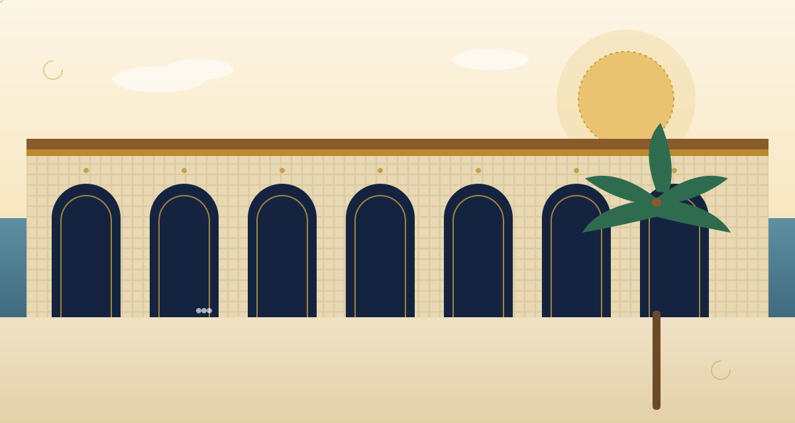
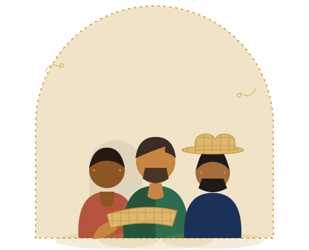

Vitrina Colectiva “Corazón Artesano”
Artesanía momposina, comercio justo y trabajo colectivo.
Una iniciativa de 75 mujeres artesanas de Santa Cruz de Mompox que une tradición, cooperación y herramientas digitales para llevar sus productos directamente a nuevos mercados.
75 mujeres que tejieron una vitrina propia
Entre los 28 y los 60 años, las artesanas de Corazón Artesano elaboran tejidos, joyas en filigrana, productos en palma de iraca y dulces tradicionales. Sus productos se comercializaban de manera informal y local; hoy participan colectivamente en la gestión de una vitrina comercial física y digital.
Cada artesana conserva su taller y su técnica, pero comparte vitrina, marca y canales de venta con las demás.
Las decisiones sobre precios, campañas y espacios de la vitrina se toman en asamblea, con el principio “una persona, un voto”.
Cada producto presenta a su autora: su historia, su oficio y sus años de experiencia quedan a la vista del comprador.

Cinco oficios, una sola vitrina
Explora las categorías de la producción artesanal de nuestras socias.
De las manos de la artesana a tu casa
Las artesanas se organizan
Las 75 socias conforman la cooperativa y deciden juntas cómo gestionar la vitrina.
Registran sus productos
Cada artesana publica sus piezas con historia, materiales y precio justo.
La cooperativa los exhibe
La vitrina física y la tienda digital muestran el catálogo colectivo a turistas y compradores.
Los clientes compran directamente
Sin intermediarios: cada compra se registra a nombre de la artesana que elaboró la pieza.
Los ingresos fortalecen a las familias
El ingreso llega completo a los hogares y se reinvierte en la comunidad.
No es solo una tienda: es una cooperativa
La vitrina funciona bajo los principios de la economía solidaria y la participación democrática.
Una persona, un voto
Todas las socias participan en igualdad de condiciones, sin importar su volumen de ventas.
Gestión colectiva
Asamblea, junta y comités administran la vitrina con decisiones tomadas en conjunto.
Precios justos
Los precios se definen colectivamente reconociendo el valor del trabajo artesanal.
Beneficio comunitario
Los excedentes se reinvierten en la vitrina, en formación y en bienestar para las socias.
“Antes cada una vendía sola, a veces a quien nos pagara menos. Ahora somos una vitrina con nombre propio y lo que vendemos se queda en Mompox.”María Rodríguez · Palma de iraca · socia fundadora
Lo que ya está creciendo
Cifras del prototipo, calculadas con los datos registrados en la vitrina.
Métricas del prototipo: cambian en vivo cuando se simulan ventas o se registran productos.
¿Hacemos crecer juntos la vitrina?
Explora el catálogo, conoce a las artesanas y descubre cómo la cooperación convierte el trabajo individual en fuerza colectiva.